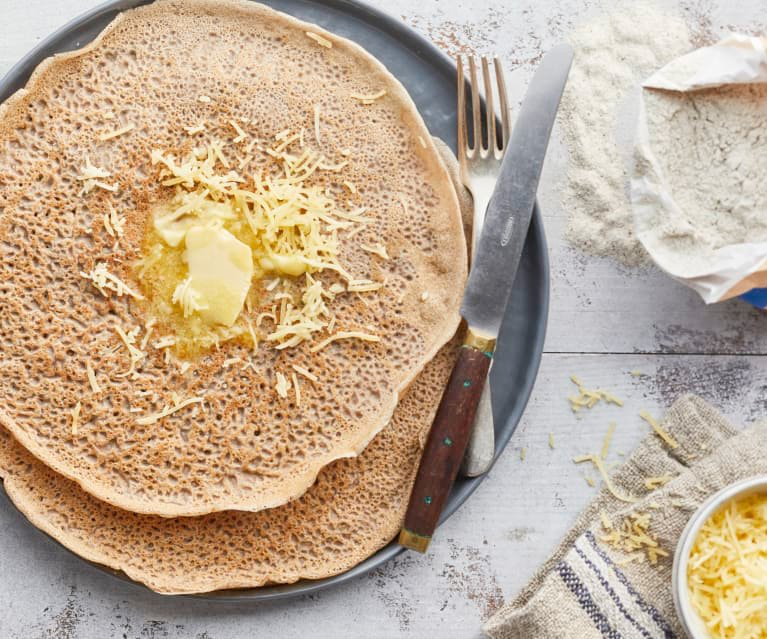

Pâte à galette
Ingrédients
6×
- 240 g de farine de sarrasin
- 1 oeuf
- 1 à 1,5 cac de sel
- 180 g de lait
- 360 g d'eau
- 45 à 60g de beurre demi-sel

Préparation
Étape 1
Mixer 240 g de farine de sarrasin, 1 oeuf, 1 à 1,5 cac de sel et 180 g de lait 1 min/vitesse 3.
Étape 2
Insérer le fouet, ajouter 360 g d'eau et fouetter 2 min/vitesse 3.
Étape 3
Chauffer une noix de 45 à 60g de beurre demi-sel dans une grande poêle antiadhésive. Verser une petite louche de pâte et l’étaler en tournant la poêle.
Cuire 2-3 min par face. Recommencer jusqu’à épuisement de la pâte.
Résumé
240 g de farine de sarrasin
1 oeuf
1 à 1,5 cac de sel
180 g de lait
Mixer 1 min/vitesse 3
360 g d'eau
fouetter 2 min/vitesse 3
45 à 60g de beurre demi-sel
étaler
Cuire